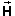
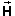
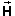

and
, as represented by the arrows
shown on the left, are acting on a particle, is there a single force,
, that has the same effect as and
combined?
and
, as represented by the arrows
shown on the left, are acting on a particle, is there a single force,
, that has the same effect as and
combined?
Question. If two forces and
, as represented by the arrows
shown on the left, are acting on a particle, is there a single force,
, that has the same effect as and
combined?
Answer. The answer is YES, according to Newton, who claimed in his Principia that this single equivalent force is the vector sum
= + .
Question. If one or several forces are acting on a particle, how do they affect the particle's motion?
Answer. According to Newton's second law of motion, the vector sum of all forces acting on a particle determines the particle's acceleration.
Thus, we need to be able to add vectors. There are many other situations in physics where vectors need to be added.
The easiest way to calculate the sum of two vectors is to use scalar components.
The following pages will explain what scalar components are and how to use them.